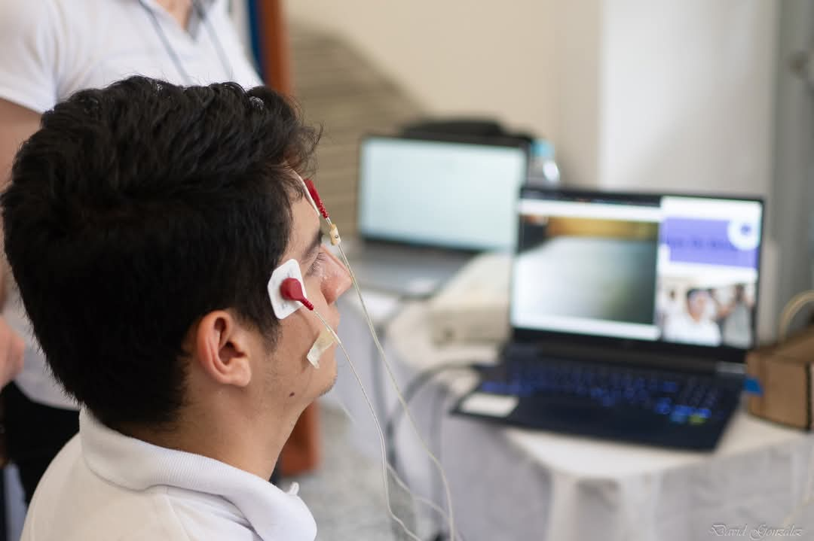

Maria Jose Mendieta
Professional Summary
Junior electronics engineer with experience in research, prototype robot development and technology education. I have participated in automation and robotics projects within the IMACUNA research group, notably in the design and construction of a SCARA robot for pick-and-place applications. I have skills in leadership, teamwork and effective communication, demonstrated in mentoring more than 30 students in electronic engineering and 3D printer optimization, improving their print quality by 20%. In addition, I have shared my knowledge as a speaker at academic events such as the Semana de Investigación Universitaria SIU (2024) and I have participated consecutively in the Muestra Estudiantil de Trabajos de Ingeniería Electrónica (METIE) from 2022 to 2024. I am looking for an opportunity to apply my knowledge in robotics and automation to innovative and impact projects.
Experience
- Tutor - Institución Educativa Técnica La Chamba. Guamo, Tolima
August 2024 – November 2024
- Tutored over 30 students in introductory and advanced Electronic Engineering topics.
- Design and implementation of educational projects that promote interactive learning.
- Maintenance and optimization of 3D printers, improving their print quality by 20%.
- Development of user manuals and guides for the use of 3D printers and interactive displays aligned with creative and cultural activities of the community.
- Research Assistant - Universidad de Ibagué. Ibagué, Tolima
August 2023 – January 2025
- Research and documentation on advances in robotics and automation to support projects of the IMACUNA research group.
- Design and construction of robotic prototypes, including a SCARA robot for pick-and-place applications.
- Collaboration on technology initiatives within the D+TEC group, contributing to the development and validation of innovative solutions.
Skills
- Design & Analysis Tools: MATLAB, Proteus, Eagle PCB Design Software, Arduino, SolidWorks.
- Programming Languages: C++, Python, HTML.
- Electrical Testing Instruments: Oscilloscopes, Function Generators, Digital Multimeters, Spectrum Analyzers, Power Supplies.
- Other: Soldering, 3D Printer, CAD, Circuit analysis, Report writing.
Education
Bachelor of Engineering - Electronic Engineering
Universidad de Ibagué
March 2025
- Thesis on characterization, design, prototyping, and validation of a SCARA serial robot for pick-and-place applications.
- GPA: 4.58/5.00
Other
Certifications:
- PCB Development & Design (SENA, 2023)
- IoT Solutions Design (SENA, 2023)
- Technical Studies in electronics and communications (High School: Institución Educativa Liceo Nacional, 2019)
Projects:
- Conversion of body movements to keyboard commands for playing video games (Game Body, 2022)

- Remote control for a mobile robot using EOG signals and ESP-32 microcontrollers (Eyes on Drive, 2023)

- Designed, prototyped and validated a SCARA pick-and-place robot with Arduino control and graphical interface (Robot serial tipo SCARA para aplicaciones pick-and-place, 2024)
Contact Me